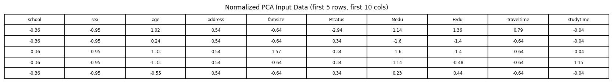
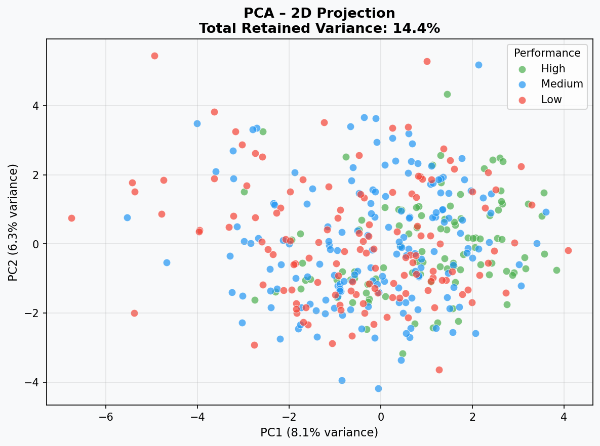
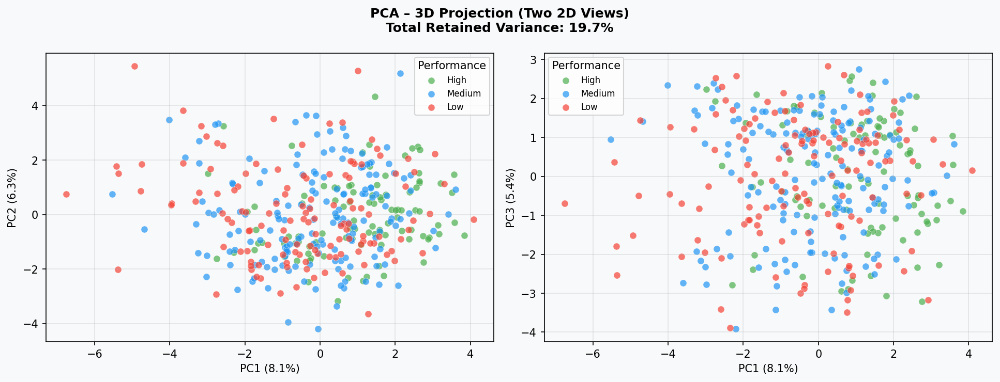
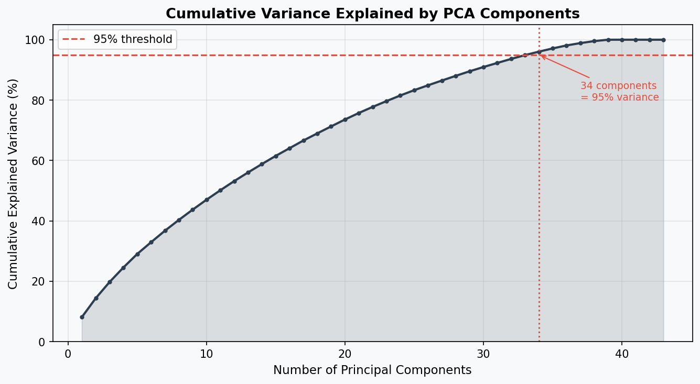
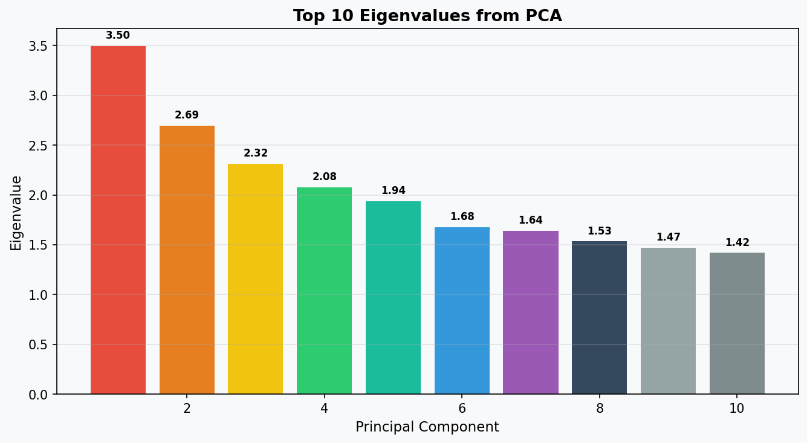

Principal Component
Analysis (PCA)
Reducing complexity while retaining the most important variance in student data.
📄 View Full Code →What is PCA?
Principal Component Analysis (PCA) is an unsupervised dimensionality reduction technique that transforms a dataset with many correlated features into a smaller set of uncorrelated variables called principal components. Each principal component is a linear combination of the original features, ordered so that the first component captures the greatest amount of variance in the data, the second captures the next greatest (orthogonal to the first), and so on. PCA is particularly useful when working with high-dimensional datasets because it reduces computational complexity, removes multicollinearity, and makes data more amenable to visualization. Rather than discarding information arbitrarily, PCA retains the directions in the feature space that carry the most explanatory power — quantified by eigenvalues. By projecting data onto the top principal components, we can often preserve the majority of meaningful variance while working in a much lower-dimensional space. In this project, PCA is applied to the student dataset to explore the underlying structure of student attributes, identify the most influential feature directions, and reduce the data to 2D and 3D representations for visualization.
Dataset & Data Source
The Student Performance (Math) dataset from the UCI Machine Learning Repository was used for PCA. This dataset contains 395 student records, each described by 33 attributes covering demographics, social factors, and academic records.
Source file: student-mat.csv (semicolon-separated) —
UCI Repository Link →

Data Preparation for PCA
PCA requires exclusively quantitative, numeric data. Labels (such as the performance category) must be removed, and qualitative columns cannot simply be remapped to numbers — instead, binary and multi-category columns were properly encoded first, then the performance label was separated. The steps applied:
Preparation Steps
- Load raw
student-mat.csv - Binary-encode yes/no columns (e.g.,
internet,higher,romantic) usingLabelEncoder - One-hot encode nominal columns:
Mjob,Fjob,reason,guardian - Remove target variables:
G3,G1,G2, and theperformancelabel - Normalize all remaining features using StandardScaler (mean=0, std=1)

Normalization: sklearn.preprocessing.StandardScaler was used to ensure no single feature dominates the PCA due to scale differences. After scaling, each column has mean ≈ 0 and standard deviation ≈ 1.
PCA Results
PCA with n_components = 2
When PCA is performed with 2 principal components, the data is projected onto a 2-dimensional plane. This makes it possible to visualize the entire dataset in a scatter plot. Each point represents one student, and colors indicate their performance category (Low / Medium / High).
Interpretation: The 2D projection retains 14.4% of the total information. While this number may seem low, it is expected for a high-dimensional dataset like this one where many features share moderate correlations. The student groups show some separation — particularly between Low and High performers — but significant overlap exists, suggesting that 2 components alone are insufficient to fully distinguish performance categories.

PCA with n_components = 3
Adding a third principal component increases the retained variance and provides additional separation power. Two cross-sectional views (PC1 vs PC2, and PC1 vs PC3) are shown to capture the structure of the 3D space.
Interpretation: The 3D projection retains 19.7% of total variance. The additional component adds modest separation between groups. The view of PC1 vs PC3 reveals a slightly different clustering pattern, suggesting PC3 captures complementary information not present in the first two components.

How Many Dimensions to Retain 95% Variance?
To determine how many principal components are needed to retain at least 95% of the data's information, we plot the cumulative explained variance against the number of components. The red dashed line marks the 95% threshold.
Answer: 34 components are required to retain at least 95% of the variance in this dataset. This reflects the relatively high dimensionality of the student feature space — 43 features (after one-hot encoding) each contribute small but meaningful amounts of information, and no small subset of components fully dominates. To work at 95% fidelity, the dataset would need to be reduced from 43 features down to 34 principal components.

Variance Retention Summary
Top Eigenvalues
Eigenvalues measure how much variance each principal component captures from the dataset. The larger the eigenvalue, the more information that component holds. The chart below shows the top 10 eigenvalues.
| Component | Eigenvalue | % Variance | Interpretation |
|---|---|---|---|
| PC1 | 3.497 | 8.1% | Strongest single direction — likely captures academic/study behavior |
| PC2 | 2.695 | 6.3% | Second strongest — social/lifestyle dimension |
| PC3 | 2.315 | 5.4% | Third — possibly family background factors |
| PC4–PC10 | 1.0–1.5 | ~3% each | Diminishing but still informative components |

Top 3 Eigenvalues: PC1 = 3.497, PC2 = 2.695, PC3 = 2.315. No single component dominates dramatically, which is characteristic of social science datasets where many factors each play a moderate role rather than one factor driving everything.